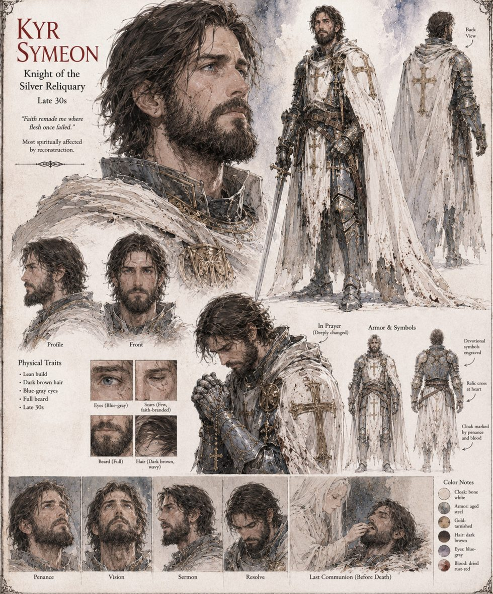

Kyr Symeon
Knight of the Silver Reliquary · one of the Twelve · late 30s
One of the Twelve, whose faith ran so deep his men joked he prayed in his sleep. Before the cave he wept at the third repetition of the Unhastening's name, a swelling in the chest he privately called being seen. Afterward he kneels in the same House of Vigil, says the same words in the same order with a technical fluency a choirmaster would have approved, and searches for the ache the way a man searches a dark room for furniture that used to stand there. Even the Return, the unwitnessed second repetition, changes nothing.
The absence, he decides, is structural, and he files that too. His wife, Kassia, hears the difference in his voice before she has a word for it. The sheet calls him the one most spiritually affected by reconstruction.
“Faith remade me where flesh once failed.”
Appears In

Related Subjects


Related Records

Kyr Symeon performs the Return in the House of Vigil, word for word, and finds only floor where the ache used to be.